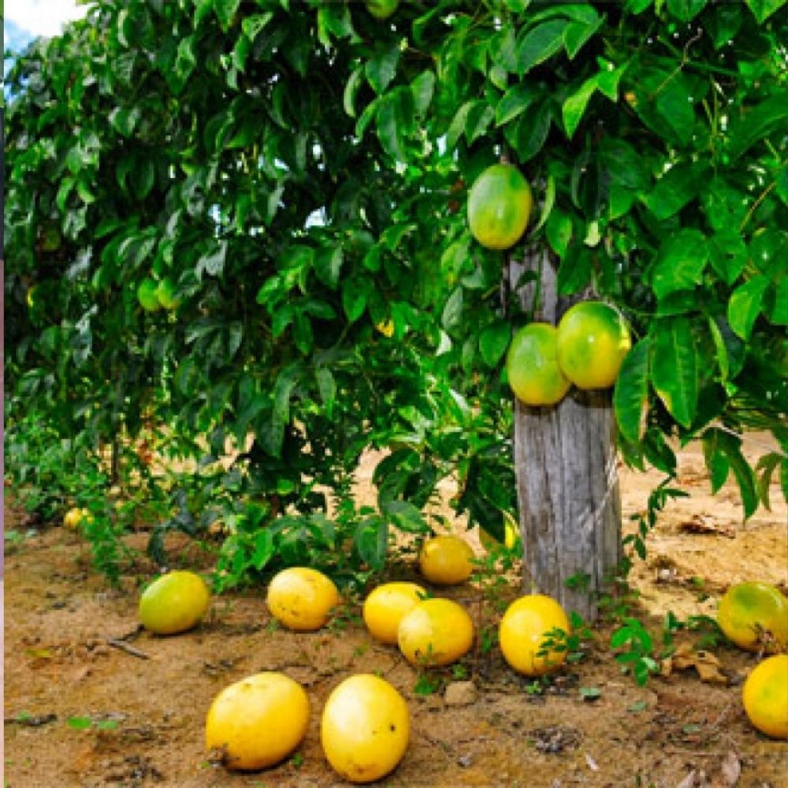

Dicas e tutoriais de como realizar o plantio de Maracuja
Como plantar:
O nosso site Horta em Casa gosta de ensinar o passo a passo da forma de plantio e cultivo de cada planta, assim mesmo que você seja leigo e nunca tenha visto ou plantado um pé de maracujá, verá como é fácil e simples obter essa fruta saborosa.
- Primeiramente ressaltamos que os melhores meses para fazer o plantio de maracujá se dá no período entre junho e agosto, assim ao adquirir suas sementes, em lojas de produtos naturais, lojas de jardinagem ou mesmo da própria fruta, coloque 3 a 4 delas em um vaso, ao final de 20 a 30 dias você poderá observar os primeiros brotinhos.
- Se você já viu um pé de maracujá ou ao vivo ou na TV, sabe que se trata de uma planta com ramificações, ou seja é uma trepadeira, portanto você precisará fazer uma espécie de sistema de sustentação, assim que a planta estiver fixada no local de cultivo definitivo, para sustentar a planta e permitir que ela cresça saudável e produza bons frutos.
- A poda é realizada depois da instalação do sistema de sustentação, que você já aprendeu como se faz no tópico anterior, portanto nesse caso você irá podar o seu pé de maracujá para que ele fique rente à parte vertical do apoio, para que assim ele possa crescer junto à ele.
-
Agora iremos falar um pouco sobre o processo de adubação, esse deve ser feito antes do processo de semeadura, além disso,
durante o tempo de vida da planta esse processo deve se repetir a cada 30 dias.
A matéria prima para se realizar uma boa adubação no geral consistem em esterco, adubos orgânicos, sulfato de amônia, cloreto de potássio e superfosfato simples. - Contudo, lamentamos informar que dependendo da região onde você mora ou clima é bem provável que surjam as temidas pragas (uma das piores pragas para quem cultiva maracujá em casa são a benditas lagartas) que podem atrapalhar o desenvolvimento de seu pé de maracujá, mas não se desespere, há soluções para combater esse problema, procure combater utilizando pesticidas biodegradáveis ou mesmo alguns naturais.